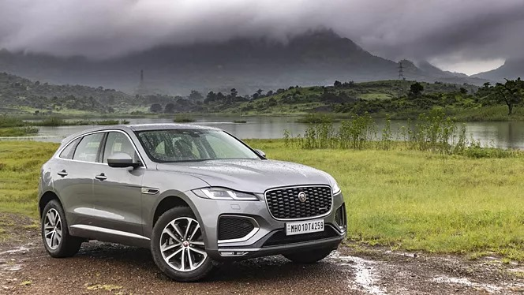

The Jaguar F-Pace is a luxury SUV that combines performance, style, and practicality. Launched by Jaguar, it offers a blend of sporty handling with the versatility of an SUV. Key features include a sleek, aerodynamic design, a range of powerful engine options (including petrol, diesel, and hybrid), and advanced technology for a comfortable and connected driving experience.
The interior is spacious and luxurious, with high-quality materials and cutting-edge infotainment systems. Safety features are also prominent, with advanced driver assistance systems. The F-Pace is designed to cater to both driving enthusiasts and families looking for a stylish yet functional vehicle.
Key Features and Details
Performance
- The F-Pace offers a variety of engines, including a 2.0-liter four-cylinder turbocharged engine, a 3.0-liter inline-six with mild-hybrid technology, and a 5.0-liter V8 in high-performance models like the F-Pace SVR.
Design
- The F-Pace boasts a sleek and sporty exterior with a distinctive grille, aggressive lines, and an aerodynamic profile. It’s designed to look both elegant and athletic.
Exterior
- Inside, the F-Pace offers a luxurious and spacious cabin with high-quality materials, including leather upholstery and wood or metal trim. It’s designed for comfort and sophistication.
Customization
- Each Maybach Haute Voiture is highly customizable, allowing buyers to tailor the vehicle to their personal tastes. This includes choices of materials, colors, and even specific design elements, ensuring that no two vehicles are exactly alike.
- The level of customization is akin to a bespoke fashion piece, where clients can choose the fabric, color, and finish that best suits their personal style.
Technology
- The F-Pace is equipped with Jaguar’s Pivi Pro infotainment system, which includes a touchscreen interface, smartphone integration (Apple CarPlay and Android Auto), and available navigation.
Comfort and Practicality
- The F-Pace provides ample cargo space and rear-seat room, making it practical for both daily use and long trips.Features such as heated and ventilated seats, a panoramic sunroof, and high-quality audio systems enhance passenger comfort.
Target Audience
- Overall, the Jaguar F-Pace is designed to cater to those who appreciate a luxurious driving experience combined with the versatility of an SUV.
| Jaguar F Pace |
| Top Speed |
217 kmph |
| WLTP Mileage |
19.3 kmpl |
| Fuel Type |
Diesel |
| Engine Displacement |
1997 cc |
| Max Power |
201.15bhp@3750rpmMax |
| Max Torque |
430Nm@1750 - 2500rpm |
| Transmission Type |
Automatic |
| Fuel Tank Capacity |
60 Litres |
| No. of Cylinders |
4 |
| Boot Space |
613 Litres |